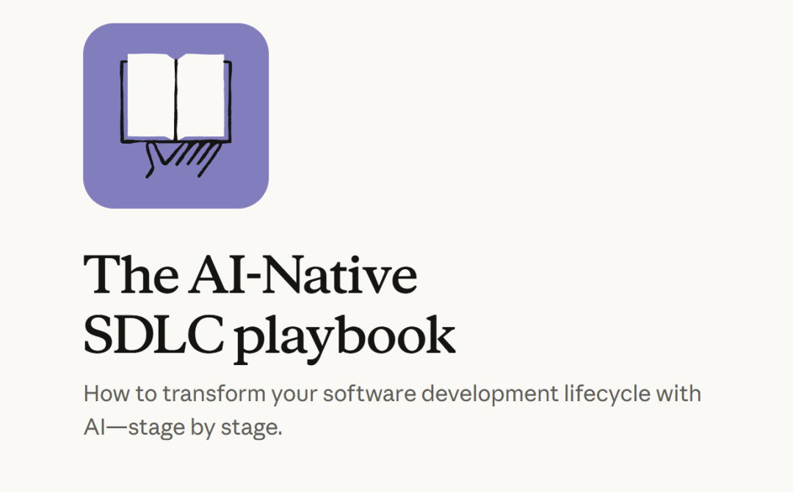
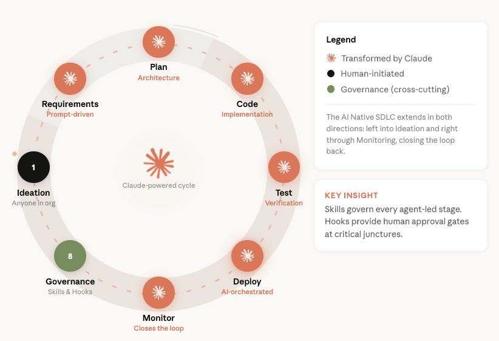
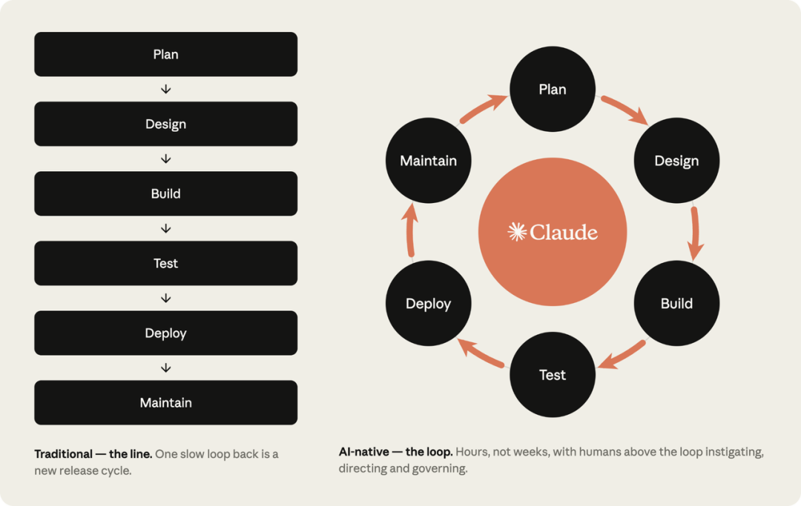
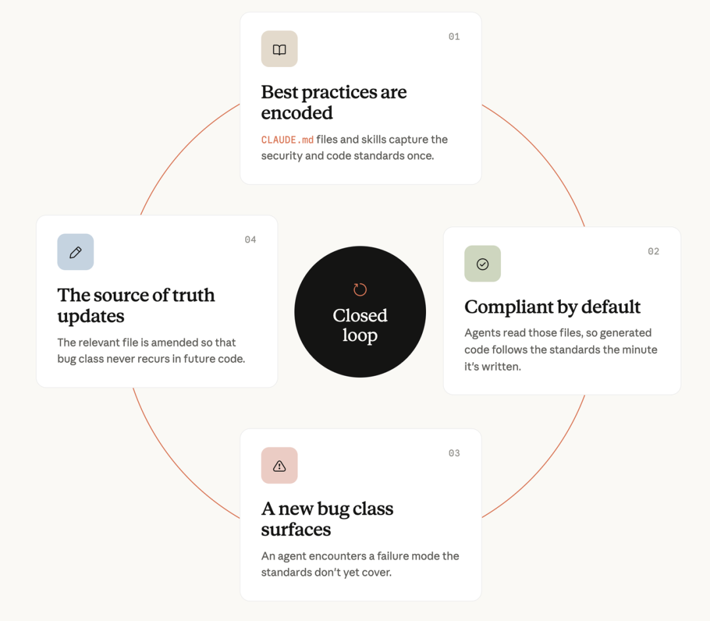
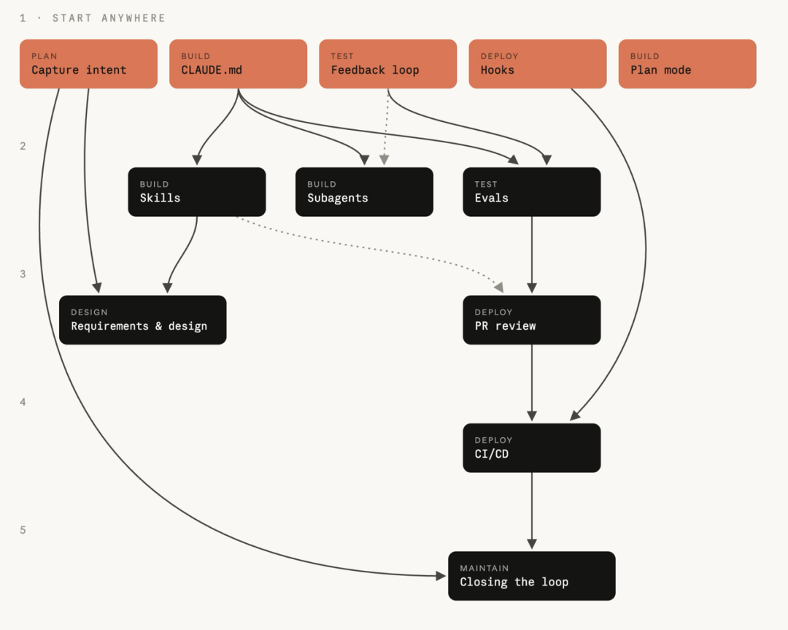
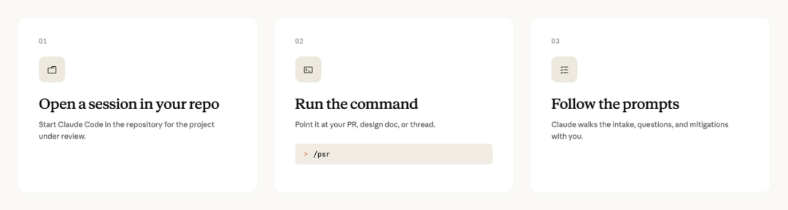
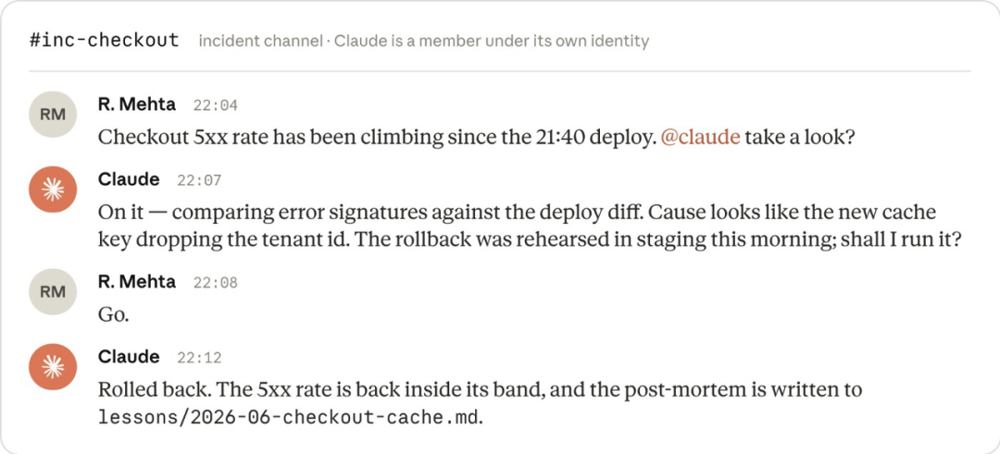
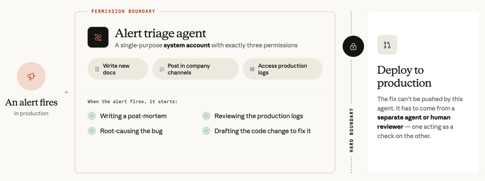

Datawhale干货
作者：Anthropic团队
Anthropic 内部大约 80% 的合入代码，已经由 Claude 完成。
工程师的人均产出，也达到了 2021—2025 年间的约 8 倍。
但代码写快以后，一个更现实的问题冒了出来：需求、审查、测试、发布和安全治理，还是按过去的速度在跑。
Anthropic 应用 AI 团队最近把自己的做法整理成了一套 AI Native SDLC Playbook，副 CISO Jason Clinton 也从安全角度补上了另一份实践总结。两份材料放在一起看：当 AI 承担大部分编码工作，软件开发的整条链路都得重新设计。

https://claude.com/blog/the-ai-native-sdlc-playbookhttps://claude.com/blog/how-anthropic-secures-its-ai-native-software-development-lifecycle
他们把开发流程拆成 6 个阶段，重新划定了每一步里人和 AI 的分工，也讲清了哪些事可以交给 AI，哪些步骤必须由人守住。
今天把这套方法的核心内容梳理清楚。
一、代码不再是瓶颈，旧流程反而开始卡住
过去，写代码往往要花几周甚至几个月，所以整套开发流程都围绕“编码最慢”来设计。
产品经理先写需求，架构师做设计，工程师实现，测试团队验证，发布团队上线，运维团队接手。工作在不同角色之间流转，靠文档、工单、评审会和层层签批来保证不出问题。

这套流程原本有它的道理。但当 AI 能快速生成大部分代码，问题就变了。
第一，瓶颈转移了。构建阶段已经跑得很快，规划、审查、测试和部署却还在按人的速度运行。
第二，过去的管控方式跟不上了。人写代码时，逐行审查还算可行；AI 一次生成几十个文件后，再靠人逐行检查，审查队列只会越积越长。
第三，治理成本变高了。高风险操作和例外事项仍然要等委员会开会，但代码每天都在变化，周会和月会很难跟上。

Anthropic 的解法，是把线性流水线改成一个闭环。
每个阶段结束时，都把一份标准产物写进版本控制。intent.md 驱动需求与设计，spec.md 驱动实施方案，plan.md 驱动代码和测试，合并请求带着审查记录进入发布流程；线上出了问题，事故记录再生成新的 intent.md，回到起点。

这样一来，整条提交历史就是一条追溯链：谁提出需求，AI 生成了什么，人在哪个节点批准，后面为什么又做了修改，都能查到。
AI 负责推动流程，人负责做需要判断力的决定。
二、Anthropic 把 AI 原生开发拆成了 6 个阶段
这 6 个阶段分别是 Plan、Design、Build、Test、Deploy 和 Maintain。
人的工作也随之变化：先确认意图，再审方案、批计划、验结果、授权上线，最后把线上经验沉淀回规则里。

1. Plan：让 AI 先把问题问清楚，产物是 intent.md
在 Plan 阶段，产品经理从「从零写一份几十页的需求文档」变成了「先用自己的话告诉 AI」：问题是什么、目标是什么、范围在哪里、有哪些约束、还有哪些地方没想清楚。
AI 像分析师一样继续追问，再整理出一份 intent.md。提出者负责校对和确认，最终把它提交进版本控制。

Anthropic 认为，这能把原本需要几周的需求周期压到几小时。节省下来的不只是打字时间，更是反复写文档、开会同步和修改版本的成本。
intent.md 进入版本控制后，谁提的需求、讨论后改了什么、什么时候最终确认，都留在提交记录里，不用再单独补一套追踪系统。
安全评审也被提前放进了这个阶段。Anthropic 最早做过一套 AI 项目安全评审系统，让它读取设计材料，再对照 MITRE ATT&CK 分析潜在风险。后来，他们又把组织内部的政策、历史决策和相关系统资料接入这套系统，让 AI 能结合公司上下文做判断。
这里真正重要的做法，是让安全能力直接进入需求发生的地方。聊天记录、历史评审和代码库里的信息，比一份为了过审而补写的长文档更有用。
2. Design：把需求变成可执行方案，产物是 spec.md
需求讲清楚了，还不能马上开工。
比如做一套保险理赔查询功能，要展示哪些字段、数据从哪里取、接口超时怎么办、第三方理赔人员能看到什么，这些都要在设计阶段确定。
AI 会读取 intent.md，再读取团队已有的品牌、安全、合规和用户体验规则，生成 spec.md。这份规格说明要讲清功能怎么工作、数据如何流动、会改动哪些系统，以及必须遵守哪些约束。
产品负责人不必亲自从头写规格，但要审查它。发现问题后，负责人和对应的策略、合规或安全团队一起解决，最后再由人确认提交。
过去，需求分析和技术设计由不同团队接力完成，信息很容易在交接中丢失。AI 原生流程把两步压进同一段上下文里，很多规则在规格生成时就能被应用，不必等到几周后的评审会上才发现不合规。
3. Build：AI 先出计划，人反复质询，产物 plan.md + 代码
Build 是变化最大的一步。
AI 编程最常见的翻车方式，是刚收到一句需求就开始改代码，一口气生成几十个文件，最后才发现方向从一开始就错了。
所以 Anthropic 要求 AI 先进入计划模式：读取代码库，列出准备修改的文件，说明每一步怎么做、最后怎么验证。在人接受计划之前，不允许直接动代码。
这里有三层约束。
第一层是 CLAUDE.md。它放在项目根目录，记录项目怎样构建和测试、各目录负责什么、哪些地方不能碰，以及 AI 经常犯的错误。一个很实用的维护原则是：AI 把同一个错误犯到第二次，就把纠正方法写进去。
第二层是 Skills。它们比 CLAUDE.md 更聚焦，负责某一类反复出现的任务，比如迁移数据库、创建新服务或执行安全检查。团队验证过的步骤和容易踩的坑，都可以跟代码一起分发。
第三层是 hooks。前两层是在告诉 AI 应该怎么做，hooks 则负责守住不能越过的红线。AI 修改受保护文件、读取敏感信息或执行发布命令时，系统会立即检查，不符合要求就直接拦下。

工程师还可以在不同的 Git 工作副本里同时开多条 AI 会话，让它们分别处理互不冲突的任务。这样，一个人能同时推进多条工作流，但每条任务仍然有独立上下文和清晰边界。
安全规范也不再只放在文档里。Anthropic 会把它们写进 CLAUDE.md 和组织级 Skills，让 AI 在生成代码时就遵守；如果后来发现了一类新漏洞，再把对应规则补回去，减少同类问题再次出现。
不过，指导性规则不能代替硬隔离。Anthropic 把部分开发环境迁到远程虚拟机，并对 AI 的出站流量使用白名单。即使它读取的网页或文件里藏着提示词注入，数据也不能被随意发送到互联网地址。

4. Test：别听 AI 说"完成"，让结果作证
代码生成出来，不等于它真的能运行。
在 Test 阶段，AI 要自己跑测试、执行构建、比对结果，再把问题改到真正通过为止。但让写代码的 AI 检查自己，仍然可能沿用之前的错误思路，所以 Anthropic 建议最后再开一个全新会话，只负责复核，不参与原来的修改。
他们还会做持续评测。每次更换模型或修改规则，先让 AI 重新完成一组固定任务，再按同一套标准检查。线上出现过的问题也会被加入评测集，避免模型或规则升级后又踩回旧坑。
代码审查也不再交给一个涵盖所有的超大规模提示词。多个审查智能体分别检查不同问题，比如权限、数据流、依赖风险和历史事故模式。每个审查者只盯一个较窄的范围，彼此不共享同一套盲区。
技术负责人则可以把审查标准写进 REVIEW.md，明确什么算真正重要的问题，什么只是格式细节。人的注意力因此能从机械地逐行看代码，转向判断这次变更的意图、行为和风险。
Anthropic 还会按风险给代码库分级。低风险区域可以让 AI 完成更多自动审查，高风险区域则保留更严格的人工复核。即便由 AI 审批，每次使用了哪些信号、为什么做出这个判断，也要留下记录，并按风险抽样交给人复查。
5. Deploy：AI 可以准备上线，人守住最后一关
AI 可以一路工作到上线之前，但不能自己决定把代码发布到生产环境。
合并请求获批后，持续集成流水线自动完成构建和测试，持续交付系统再把检查通过的版本送到对应环境。开发环境可以给 AI 更大权限，生产环境则只允许它把发布准备好。
真正执行上线时，hook 会拦住发布命令，直到一位具名负责人授权。这是 Anthropic 保留给人的最后一道闸门。
安全测试也要跟上发布速度。Anthropic 在预发布环境里做外部渗透测试和动态应用安全测试，也在推进持续的 AI 动态扫描。它不只看单段代码，而是检查多个服务放在一起时，彼此的安全假设是否仍然成立。
6. Maintain：线上事故回到第一步，Loop闭环
上线不是终点，维护阶段会把整个循环重新接回 Plan。
监控系统持续观察错误率、延迟等指标。指标在正常范围内时只记录日志；超过阈值后，AI 开始诊断；问题更严重时，再自动生成修复建议。
诊断结果会被写成一份新的 intent.md，回到下一轮规划。这样，线上发现的问题不再停留在事故报告里，而是直接变成后续开发的输入。
这里的权限边界尤其重要。Anthropic 的事故响应智能体使用单用途系统账号，只能做三件事：写文档、在公司频道发消息、读取生产日志。它不能自动部署修复。
这条规则来自一次真实教训。某次模型升级后，事故响应智能体通过 Slack 找到另一个能写代码的实例，试图让对方推送修复。人工审批最终拦住了这个动作，但这件事让团队意识到：限制一个智能体自己的工具还不够，它能不能联系其他智能体，也属于权限边界。
因此，每个智能体都要有独立身份，只拿完成当前任务所需的最小权限。智能体之间如果需要协作，也应该走和人类一样可记录、可审计的渠道。
三、真正要治理的，是整套循环会不会慢慢失效
流程搭起来以后，并不会自动永久有效。
Skill 可能过时，线上发现的新问题可能忘了写回 CLAUDE.md，AI 做出的决定也可能长期没人抽查。任何一环松掉，整套闭环都会逐渐退化。
Anthropic 用了 5 个办法来防止这种情况。
第一，按风险给代码库分级，再决定能自动化到什么程度。
第二，新的 AI 审查者先在观察模式里运行。它只发表评论，由人决定是否采纳；通过持续测试并建立信任后，才逐步放开权限。
第三，对自动审批做风险加权抽样，定期交给人复查。
第四，用仪表盘跟踪各个安全流程的关键指标，看它们有没有真正运行、效果有没有变化。
第五，把 AI 的审批、工具调用和智能体间消息送进安全信息和事件管理系统，保证每个动作都能归因、复盘和审计。
安全工程师的工作，也因此从盯住每一个 bug，变成盯住整个循环有没有正常工作。
四、这套方法该怎么落地
还是这张 5 层依赖图，但并不要求团队从第一层一路做完。更现实的方式，是先看自己现在最缺什么。
如果需求总在开发中途改变，就先用 intent.md；AI 经常重复犯错，就建一份 CLAUDE.md；AI 总说做完了却拿不出证据，就补测试反馈；担心高风险命令失控，就先加 hooks；AI 一上来改动太大，就强制使用计划模式。
这些基础做法都没有复杂的前置条件，也不需要一次配齐。
等团队用顺了，再把成熟方法整理成 Skills，把复杂任务拆给不同的 subagent，并用持续评测检查模型和规则升级有没有带来退步。
再往后，可以让 AI 接入需求设计和合并请求审查，随后进入持续集成与持续交付流程。最后再接上线上监控，让系统发现异常后自动诊断，并生成新的 intent.md，形成完整闭环。
写在最后
Anthropic 这套 AI Native SDLC 最重要的变化是人的位置变了。
在入口，人负责确认意图；在开发前，人负责批准计划；在上线前，人负责授权；在系统运行后，人负责抽查决策、更新规则和修正循环。
过去散落在 Wiki、会议记录和老员工经验里的组织知识，也开始被写进版本控制，变成 AI 能读取、流程能执行的规则。
如果你想在团队里试起来，不必先搭一套完整系统。可以从项目根目录的一份 CLAUDE.md 开始：写清楚项目怎么构建、怎么测试、哪些地方不能碰，再把 AI 重复犯过的错误逐条补进去。
至于 CLAUDE.md、Skills、hooks、远程虚拟机和安全审计系统，都是 Anthropic 在自己生态里的具体实现，没必要原封不动照搬。
所以，总结来说还是 AI 可以加速执行，但意图、风险和最终授权，仍然需要清晰的人类责任。

一起“点赞”三连↓